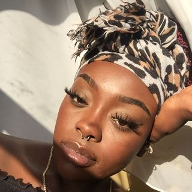

Lina Malembiteva

Mijn geboorte datum:
03/05/2001
Huidige jobs:
kassierster
zumba leerkracht
Vorige jobs:
loodgieter
elektricien
Hobies:
Een leuke grap:
Ik had een I-Pod,
gooide hem richting de T-Pod,
en toen viel ie in WC-Pod en daarna was hij K-Pod.
Mijn favoriete ontbijt
'S ochtends ontbijt ik niet altijd,
maar als ik het doe eet ik cornflakes en drink ik meestal appelsap.
Mijn lievelings quote
Never give up
Mijn lievelings video
Mijn lievelings muziek